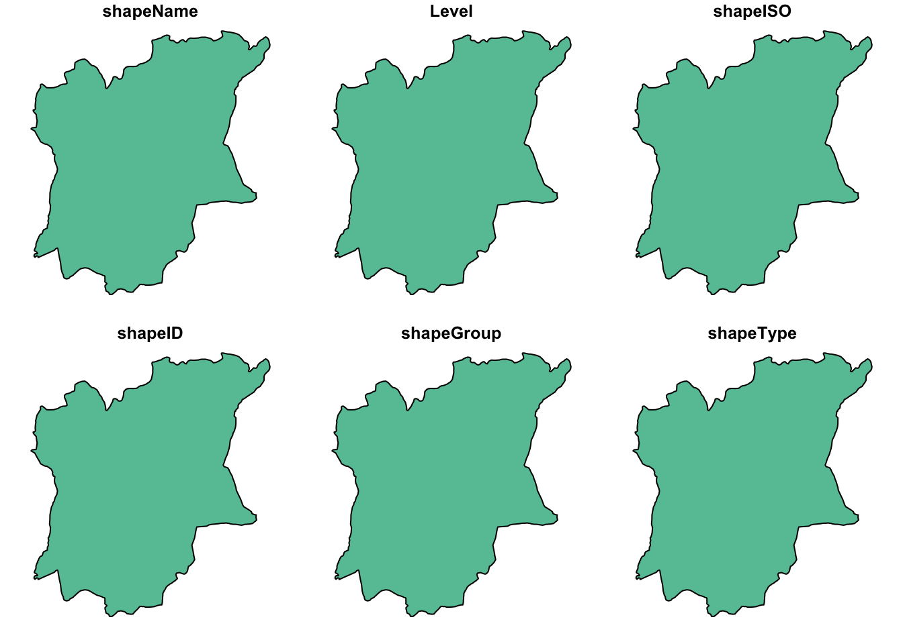

pacman::p_load(maptools, sf, raster, spatstat, tmap, tidyverse, funModeling)Take Home Exercise 1
1 Setting the Scene
Water is an important resource to mankind. Clean and accessible water is critical to human health. It provides a healthy environment, a sustainable economy, reduces poverty and ensures peace and security. Yet over 40% of the global population does not have access to sufficient clean water. By 2025, 1.8 billion people will be living in countries or regions with absolute water scarcity, according to UN-Water. The lack of water poses a major threat to several sectors, including food security. Agriculture uses about 70% of the world’s accessible freshwater.
Developing countries are most affected by water shortages and poor water quality. Up to 80% of illnesses in the developing world are linked to inadequate water and sanitation. Despite technological advancement, providing clean water to the rural community is still a major development issues in many countries globally, especially countries in the Africa continent.
To address the issue of providing clean and sustainable water supply to the rural community, a global Water Point Data Exchange (WPdx) project has been initiated. The main aim of this initiative is to collect water point related data from rural areas at the water point or small water scheme level and share the data via WPdx Data Repository, a cloud-based data library. What is so special of this project is that data are collected based on WPDx Data Standard.
The data we will be using here are:
Aspatial Data
- WPdx Global Data Repositories: WPdx+ data set
Geospatial Data
- State Boundary GIS: geoBoundaries data set
2 Install & Load Packages
3 Load Data into Rstudio
3.1 Load Geospatial data in
geoNGA <- st_read("data/geospatial", layer = "geoBoundaries-NGA-ADM1")Reading layer `geoBoundaries-NGA-ADM1' from data source
`/Users/junhaoteo/Documents/junhao2309/IS415/Take-Home_Ex/Take-Home_Ex01/data/geospatial'
using driver `ESRI Shapefile'
Simple feature collection with 37 features and 6 fields
Geometry type: MULTIPOLYGON
Dimension: XY
Bounding box: xmin: 2.692613 ymin: 4.271484 xmax: 14.67797 ymax: 13.88571
Geodetic CRS: WGS 843.2 Load Aspatial Data in
wp_nga <- read_csv("data/aspatial/WPDX.csv") %>%
filter(`#clean_country_name` == "Nigeria", `#clean_adm1` =="Osun")4 Geospatial Data wrangling
4.1 Check duplicates
We have to check the data for any duplicated names. After checking, we can see that there are no duplicates and thus it is safe to proceed
geoNGA$shapeName[duplicated(geoNGA$shapeName) == TRUE]character(0)4.2 Check CRS of geoNGA and transform
st_crs(geoNGA)Coordinate Reference System:
User input: WGS 84
wkt:
GEOGCRS["WGS 84",
ENSEMBLE["World Geodetic System 1984 ensemble",
MEMBER["World Geodetic System 1984 (Transit)"],
MEMBER["World Geodetic System 1984 (G730)"],
MEMBER["World Geodetic System 1984 (G873)"],
MEMBER["World Geodetic System 1984 (G1150)"],
MEMBER["World Geodetic System 1984 (G1674)"],
MEMBER["World Geodetic System 1984 (G1762)"],
MEMBER["World Geodetic System 1984 (G2139)"],
ELLIPSOID["WGS 84",6378137,298.257223563,
LENGTHUNIT["metre",1]],
ENSEMBLEACCURACY[2.0]],
PRIMEM["Greenwich",0,
ANGLEUNIT["degree",0.0174532925199433]],
CS[ellipsoidal,2],
AXIS["geodetic latitude (Lat)",north,
ORDER[1],
ANGLEUNIT["degree",0.0174532925199433]],
AXIS["geodetic longitude (Lon)",east,
ORDER[2],
ANGLEUNIT["degree",0.0174532925199433]],
USAGE[
SCOPE["Horizontal component of 3D system."],
AREA["World."],
BBOX[-90,-180,90,180]],
ID["EPSG",4326]]We can see here that currently geoNGA is in EPSG:4326. We have to convert to 26392 by using st_transform. The code chunk below transforms the data to crs = 26392 and is filtered by shapeName to our study area, Osun.
geoNGA <- geoNGA %>%
st_transform(crs= 26392)
osun <- geoNGA %>%
filter(shapeName == "Osun")4.3 Plot Geospatial Data
plot(osun)
5 Aspatial Data wrangling
5.1 Create simple feature on wp_nga
Using what we learn on Hands-on Exercise 1, we can create a simple feature using st_as_sf() from the sf package. We have to ensure that the file follows the same crs and therefore we use st_transform again to convert it into crs = 26392.
wp_nga_sf <- st_as_sf(wp_nga, coords = c("#lon_deg", "#lat_deg"), crs = 4326) %>%
st_transform(crs = 26392)5.2 Cleaning up NA entries in aspatial data
By using the functions in the dplyr package, we can use rename() to rename #status_clean to status_clean, select() to pick the required column variable and replacing NA to unknown.
wp_nga_sf <- wp_nga_sf %>%
rename(status_clean = `#status_clean`) %>%
select(status_clean) %>%
mutate(status_clean = replace_na(
status_clean, "unknown"))5.3 Filter out functional and non-functional data
By using filter() from the dplyr package, we can filter out entries with functional and non-functional water points.
wp_functional <- wp_nga_sf %>%
filter(status_clean %in%
c("Functional",
"Functional but not in use",
"Functional but needs repair"))
wp_nonfunctional <- wp_nga_sf %>%
filter(status_clean %in%
c("Abandoned/Decommissioned",
"Abandoned",
"Non-Functional due to dry season",
"Non-Functional",
"Non functional due to dry season"))6 Kernel Density Analysis
6.1 Converting object to relevant datatype
We have to convert sf to sp then to ppp so that it is readable by the spatstat package ### Convert sf to sp Spatial class
osun_spatial <- as(osun, "Spatial")
wp_functional_spatial <- as(wp_functional, "Spatial")
wp_nonfunctional_spatial <- as(wp_nonfunctional, "Spatial")6.1.1 Converting the Spatial point data frame into generic SP format
osun_sp <- as(osun_spatial, "SpatialPolygons")
wp_func_sp <- as(wp_functional_spatial, "SpatialPoints")
wp_nonfunc_sp <- as(wp_nonfunctional_spatial, "SpatialPoints")6.1.2 Convert sp to spatstat ppp format
wp_func_ppp <- as(wp_func_sp, "ppp")
wp_nonfunc_ppp <- as(wp_nonfunc_sp, "ppp")6.2 Create owin object
osun_owin <- as(osun_sp, "owin")6.3 Combine waterpoints and study area together
osun_wpfunc <- wp_func_ppp[osun_owin]
osun_wpnonfunc <- wp_nonfunc_ppp[osun_owin]6.4 Rescaling
Before we go on to calculate the kernal density, we should rescale the data as taught in Hands-on Ex 4 Chapter 5.
osun_wpfunc_km <- rescale(osun_wpfunc, 1000, "km")
osun_wpnonfunc_km <- rescale(osun_wpnonfunc, 1000, "km")7 Creating Kernal Density Estimate
kde_func<-density(osun_wpfunc_km,
sigma=bw.diggle,
edge=TRUE,
kernel="gaussian")
kde_nonfunc <- density(osun_wpnonfunc_km,
sigma=bw.diggle,
edge= TRUE,
kernel = "gaussian")
par(mfrow = c(1,2))
plot(kde_func, main = "Functional Water Points")
plot(kde_nonfunc, main = "Non-Functional Water Points")
8 Convert KDE objects into gridded
For mapping purposes, we can convert the KDE output into a grid object. To do so, we can use as.SpatialGridDataFrame.im() from raster